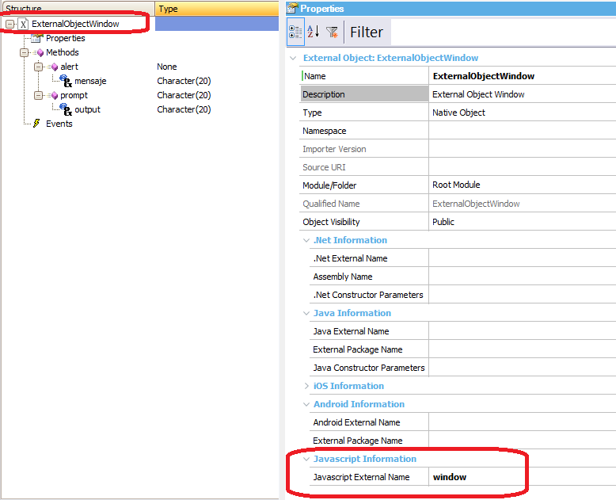
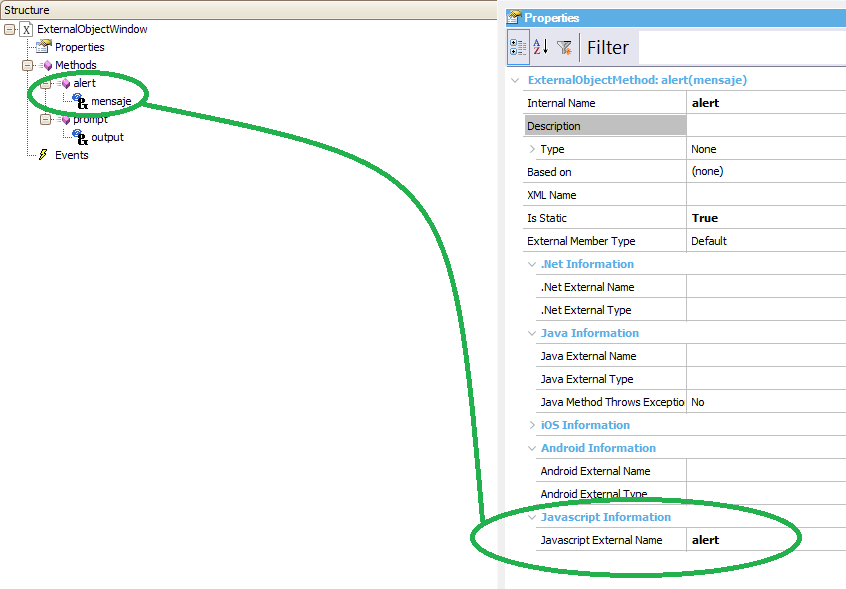

Using External Objects for Javascript, you can interact with the Window Object from the GeneXus code. Also, it exposes some methods that can be called from the GeneXus code; for example:
In this case, we don't have any associated external javascript. The Javascript External Name of the EO has to be window. 
We need to define the methods (alert and prompt), which have to be static methods, along with their parameters.
 How to call the window methods
Event 'alert'
ExternalObjectWindow.alert('Read the license agreement first.')
Endevent
Event 'promptnow'
&outdata = ExternalObjectWindow.prompt(' ')
Endevent
Note that we don't define a variable based on the External Object type because the methods we are calling are static. And, if your External Object's method has a return value it cannot be invoked from any event that has any server side code, like calling a Procedure object (the Procedure cannot be called on the same event that is calling the method wich returns a value). Download the sample from Window Object interaction sample. See alsoHow to execute GeneXus events from JS code using External Objects How to implement a dictionary data type using JS and server side code
|
| Backlinks |
| External Objects for Javascript |